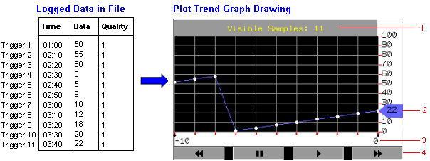
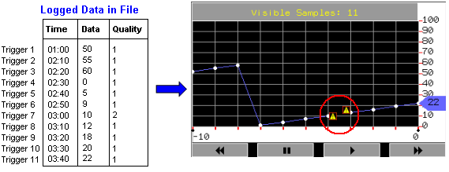
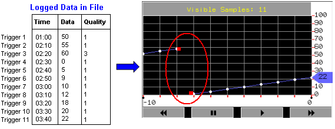
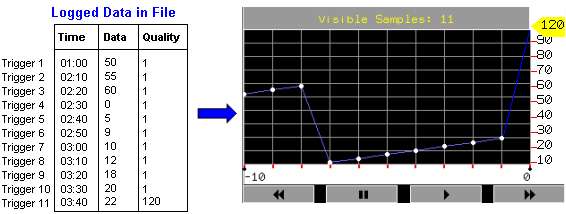
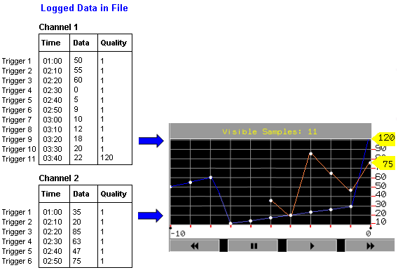

|
|
|
|
|
|
|
|
The Plot Trend Graph part in the Toolchest displays the data samples collected using the trigger data collection method. Each point on the plot trend graph represents a data sample collected for variables. The data samples are collected at different times and may span a wide range of time intervals.
During Runtime, the plot trend graph displays data samples collected using the trigger data collection method. When new data samples become available, the plot trend graph automatically scrolls to show the most current samples on the graph. Older samples scroll off the left side of the graph as they are replaced with the new data samples.
The following is an example of data samples that have been collected using the trigger data collection method and then displayed in runtime in a plot trend graph.

Header Display. The header displays how many data samples will be displayed on the plot trend graph. This value is set in the NumOfSamples property for the plot trend graph.
Pen Indicator. The sample's value is highlighted using the pen indicator to the right of the plot trend graph.
Sample Axis Label. The bottom of the trend graph displays the start and end data samples that are currently being viewed.
The 0 X-axis point is the current sample, and the X-axis points to the left (-1, -2, -3, and so on) are the older samples.
If the number of visible samples is 11, as shown in the above example, the X-axis point labelled in the far left would be -10.
If you press the Pause button, new data continues to be collected, and the X-axis label increases to the right (1, 2, 3, and so on). Press the Fast Forward button to view the data samples that collected during the pause. Press the Play button to reset the X-axis label to 0.
Scroll Buttons. The trend graph displays the following buttons so you can scroll through the logged data:
Rewind. Scrolls the display back one sample.
Pause. Pauses the display at the latest value.
Play. Resumes displaying the values.
Fast Forward. Scrolls the display forward one sample.
You can get a zoom in/out view of the sampled data horizontally (X-axis) and vertically (Y-axis), by defining valid values in the NumOfSamples and ValueMin/ValueMax properties for the Plot Trend Graph. The NumOfSamples property indicates the number of data samples to display in a trend graph view, and the ValueMin/ValueMax properties define the minimum and maximum values for the variable assigned to each channel of the graph.
At Runtime, when you zoom in, less data samples are displayed. When you zoom out, more data samples are displayed. As a result, the NumOfSamples information in the Plot Trend Graph header is updated after the zoom-in and zoom-out.
You can use the zoom feature while the trend graph is running or pausing. The maintenance mode, data quality, and power-off indicators still display when using the zoom feature. All Plot Trend Graph buttons (Rewind, Pause, Play, Fast Forward) are functional after the zoom in/out.
At Runtime, the maximum number of samples that can be displayed depends on the width of the Historical Trend Graph in pixels. For example, a 3D Historical Trend Graph (Trend3D_01) has an approximate width of 320 pixels. If the lowest trend sampling rate is 1 sample per day, you can zoom out to a maximum of approximately 320 days. If the number of samples exceed the trend graph's width, the plus symbol (+) displays in header information, for example, Visible Samples: 320+.
During Runtime, the following events may occur to affect the plot trend graph drawing:
Data quality is bad or unknown due to, for example, PLC communication problems. Bad data quality is indicated on the plot trend graph by the bad data quality symbol.
In the following example, bad data quality occurred during Trigger 7, between 3:00 and 3:10. The bad data quality is logged as "2" in the data file. The symbol displays at the start and end of the bad data quality in the trend graph. During the time of bad data quality, logging continues but the line is not drawn between sample points. Data collected after data quality recovery will be plotted on the trend graph with the icon.

Runtime goes into maintenance mode. When this occurs, logging stops until you exit from maintenance mode and the red square symbol displays on the plot trend graph. For more information on maintenance mode, see Section 20.5.4, Performing Maintenance on the Panel.
In the following example, maintenance mode started and ended between 2:20 and 2:30, during Trigger 3. The maintenance mode is logged as "3" in the data file. The red square symbol displays at the start and end of maintenance mode. During that time, no logging occurs and the line is not drawn between sample points. The next sample point that is plotted indicates that you have exited maintenance mode. If maintenance mode starts and ends before the next trigger (for example, starts at 2:15 and ends at 2:28), the red square symbol will not display on the trend graph.

The target powers off. When this occurs, if data storage is DRAM, you will lose all the sampled data on the graph before the power off. When the power comes back on, the trend graph starts fresh with no history of previously sampled data. If data storage is SRAM or SRAM and File, the new sampled data will be plotted on the trend graph when power returns, next to the last plotted sampled data before the power off. Power off is not indicated on the trend graph.
The variable value exceeds the trend graph range. When the variable value goes out of range, the pen indicator displays the value that is out of range, but the sample point will not display.

Multiple channels have been set up for a plot trend graph. The trend graph plots different collections of sampled data. The following example shows Channel 1 and Channel 2.
